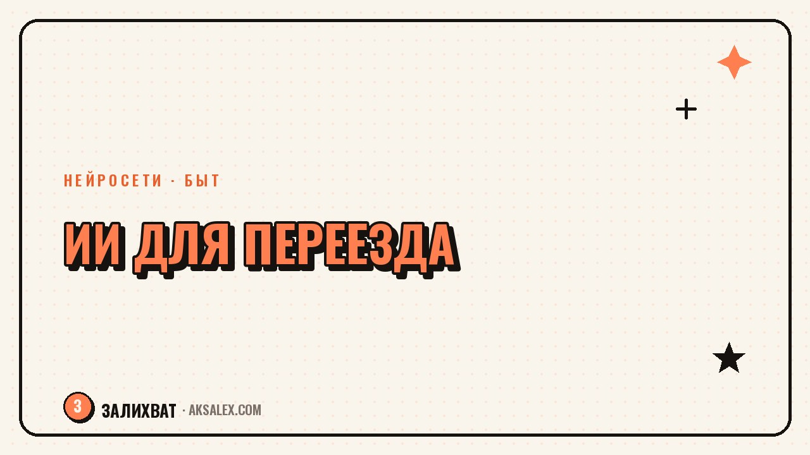

Нейросети для переезда: быт, бюджет и логистика

Переезд почти всегда начинается с одной мысли: «с чего вообще начать». Вещи копились годами, бюджет не считан, а список дел растёт быстрее, чем успеваешь его записывать. Нейросети для переезда не соберут коробки за тебя, но снимут часть хаоса - помогут посчитать расходы, составить план по дням и разобраться, что из вещей реально нужно на новом месте. Разберём конкретные задачи, где ИИ экономит время, а не создаёт лишь видимость порядка.
Планирование и чек-листы без хаоса в голове
Главная проблема переезда - не физическая тяжесть коробок, а количество разрозненных задач: отключить интернет на старом адресе, подключить на новом, перенести прописку, забрать вещи из химчистки, предупредить соседей. Все эти пункты редко живут в одном списке, и часть из них вспоминается в последний момент.
Текстовая нейросеть помогает собрать такой список за один заход. Описываешь ситуацию - квартира, город, есть ли дети или животные, дата переезда - и получаешь черновой чек-лист по дням. Дальше его легко редактировать под себя: убрать лишнее, добавить своё. Это быстрее, чем искать готовый шаблон в интернете и подгонять его под свою жизнь.
Что обязательно должно быть в чек-листе
- Дата отключения и подключения коммунальных услуг
- Перенос документов, прописки и подписок на новый адрес
- План упаковки по комнатам, а не по шкафам
- Список вещей, которые едут отдельно (документы, техника, ценности)
- Контакты грузчиков, клининга и мастеров на новом месте
Бюджет переезда без неприятных сюрпризов
Переезд почти никогда не укладывается в ту сумму, которую представляли в начале. Грузчики, упаковочные материалы, депозит за новое жильё, мелкий ремонт, новая мебель под другую планировку - статьи расходов множатся незаметно. Нейросеть помогает заранее разложить бюджет по категориям и прикинуть реалистичные суммы, если дать ей вводные: сколько комнат, нужен ли грузовой транспорт, какой город.
Это не замена калькулятору риелтора, а способ не упустить статью расходов, о которой заранее не подумал. Например, многие забывают посчитать разницу в коммунальных тарифах между старым и новым адресом или стоимость временного хранения вещей, если даты выезда и въезда не совпадают.
Самые болезненные траты при переезде - не те, что в списке, а те, о которых забыли заранее подумать.
Поиск жилья и разбор документов
При поиске новой квартиры или дома нейросеть пригодится не для самого поиска объявлений, а для разбора условий. Договор аренды или ипотечные документы часто написаны языком, в котором легко упустить важный пункт - штраф за досрочный выезд, условия индексации платы, кто оплачивает мелкий ремонт.
Загружаешь текст договора в нейросеть и просишь выделить спорные или невыгодные пункты понятными словами. Это не заменяет юриста в сложных случаях с крупной суммой или долгосрочной ипотекой, но для обычной аренды квартиры помогает заметить то, что при беглом чтении пропускаешь.
На что обращать внимание в договоре
- Условия возврата депозита при выезде
- Кто оплачивает коммунальные и мелкий ремонт
- Сроки предупреждения о досрочном расторжении
- Возможность индексации платы и её периодичность
- Ответственность за порчу имущества
Сравнение инструментов для разных задач переезда
Под разные этапы переезда подходят разные инструменты - не стоит пытаться закрыть все задачи одной нейросетью. Вот рабочее распределение по типу задачи.
| Этап переезда | Инструмент | Что решает | Когда использовать |
|---|---|---|---|
| Составление плана | Текстовая нейросеть | Чек-лист дел по дням с учётом вводных | В первую неделю после решения о переезде |
| Расчёт бюджета | Нейросеть + таблица | Разложение расходов по категориям | Сразу после выбора даты и города |
| Разбор договора аренды | Текстовая нейросеть | Выделяет спорные пункты понятным языком | Перед подписанием договора |
| Планировка новой квартиры | Генератор изображений | Визуализирует расстановку мебели | После замера новой площади |
Что делать в первую неделю после переезда
Переезд не заканчивается, когда вещи занесены в квартиру - начинается этап адаптации. Нужно понять, где рядом магазины, поликлиника, школа или детский сад, если переезд с детьми. Нейросеть, которой задаёшь вопросы о новом районе, быстрее собирает базовую картину, чем самостоятельный обход форумов.
Короткий план на первую неделю на новом месте
- День 1-2: разобрать коробки с вещами первой необходимости
- День 3: найти ближайшие магазины, аптеку, транспорт
- День 4: оформить или перенести нужные документы по новому адресу
- День 5-6: познакомиться с соседями и уточнить правила дома
- День 7: составить список того, что ещё нужно докупить для быта
Частые вопросы
Может ли нейросеть составить полный план переезда за меня?
Она соберёт разумный черновой план по твоим вводным - город, дата, состав семьи, но финальную версию всегда стоит проверить и подогнать под свою ситуацию. Нейросеть не знает твоих личных обстоятельств лучше тебя самого.
Стоит ли доверять нейросети разбор договора аренды квартиры?
Для обычной аренды нейросеть неплохо выделяет спорные пункты и переводит юридический язык на понятный. При крупных суммах, ипотеке или спорных ситуациях лучше дополнительно показать договор юристу.
Какие нейросети бесплатны для планирования переезда?
Большинство текстовых нейросетей с бесплатным тарифом справляются с чек-листами и разбором бюджета без доплаты. Платные версии нужны, только если планируешь коммерческий переезд офиса или часто меняешь планы.
Помогает ли нейросеть сэкономить на переезде?
Прямой экономии нет, но она помогает не упустить статьи расходов заранее и не переплачивать из-за забытых пунктов - например, разницы в тарифах или стоимости хранения вещей. Это экономия через планирование, а не скидки.
Нужно ли технически разбираться в нейросетях, чтобы использовать их при переезде?
Нет, достаточно уметь написать обычный текстовый запрос с описанием ситуации. Большинство сервисов рассчитаны на людей без технического опыта и работают через обычный диалог.
Раз тема оказалась полезной, вот что почитать следующим. Нейросети для парикмахера и барбера: запись, подбор образа и контент для соцсетей без лишних трат времени.
Читать статью →а не вручную